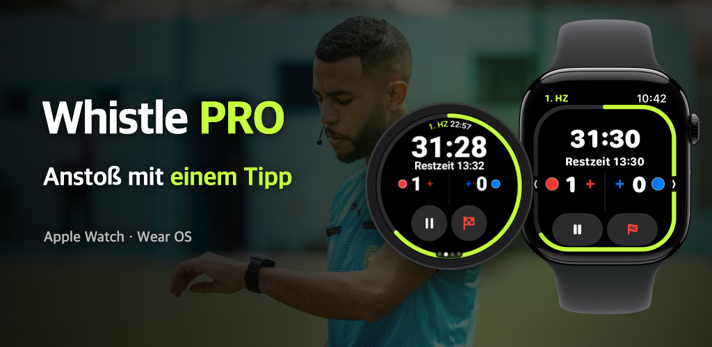

Whistle PRO
Uhr anlegen und ab auf den Platz.
Spieltimer und Spielnotizen für Apple Watch und Wear OS, gemacht für Fußballschiedsrichter.
Laden im App Store
Google Play demnächst

Uhr anlegen und ab auf den Platz.
Spieltimer und Spielnotizen für Apple Watch und Wear OS, gemacht für Fußballschiedsrichter.

Kreisliga, Vereine, Jugendligen. Das ganze Spiel läuft auf einer Uhr – ohne Smartphone.
Pausieren und fortsetzen, Tor eintragen oder rückgängig machen – mit Tasten, Krone oder Lünette, während du läufst (PRO). Auf der Apple Watch und Wear OS-Uhren wie der Galaxy Watch.
Halbzeiten, Viertel, Verlängerung und Elfmeterschießen. Unterbrechungen werden getrennt gemessen, damit du eine Nachspielzeit vorgeschlagen bekommst.
Dein Handgelenk vibriert kurz vor Schluss, am Ende der Halbzeitpause und wenn ein Spieler nach einer Zeitstrafe zurückkehren darf.
Erfasse Tore, Verwarnungen, Feldverweise und Wechsel mit Team und Rückennummer. Die zweite Verwarnung wird automatisch zum Feldverweis.
Starte mit dem FIFA-Standard, passe Spielzeit, Spielerzahl, Wechselgrenze und Zeitstrafen an und speichere alles als Vorlage.
Herzfrequenz, Distanz, Sprints und Laufwege-Heatmap werden mit dem Spiel gespeichert und als Training in der Health-App (iPhone) oder in Health Connect (Android) gesichert.
Nach dem Spiel teilst du direkt vom Smartphone einen Bericht mit Toren, Karten, Wechseln und den angewendeten Regeln.
Richte im Tab [Karte] der Spieldetails die vier Ecken des Spielfelds aus – dann erscheint deine Laufwege-Heatmap über einem Satellitenbild.
Aus Spielen mit ausgerichtetem Spielfeld machst du ein 15-sekündiges Replay-Video deiner Laufwege und teilst es direkt in sozialen Netzwerken.
Wähle vor dem Anstoß auf der Uhr die Trikotfarben beider Teams und korrigiere sie nach dem Spiel auf dem Smartphone.
Was du zum Leiten eines Spiels brauchst, ist gratis – Aufzeichnung und Auswertung gibt es mit PRO.
Ohne Abo
Monatlich oder jährlich · 7 Tage gratis testen
Das Abo schließt du in der Smartphone-App ab und kündigst es jederzeit in den Einstellungen deines App Store- oder Google Play-Kontos.
Kein Konto, kein Server. Spielaufzeichnungen und Gesundheitsdaten werden nur zwischen deiner Uhr und deinem Smartphone übertragen.
Datenschutzerklärung lesen